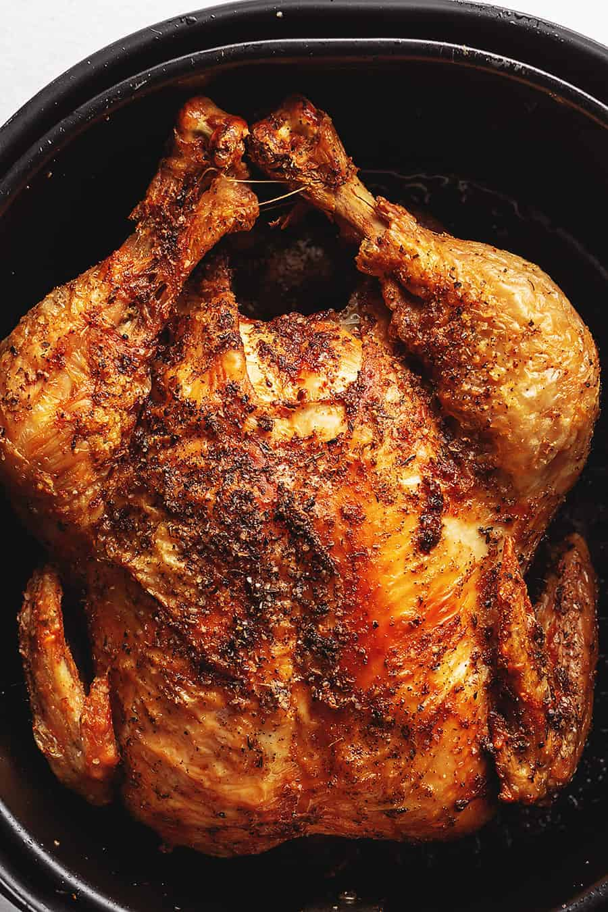

Main
Air Fryer Whole Chicken

Air Fryer Whole Chicken
This perfectly juicy and extra crispy skin chicken is a quick and delicious meal to make!
Seasoned rotisserie style, you could sub out any of the dry rub spices to change the flavor up
Ingredients
- 1 5 pound whole chicken, giblets removed
- 2 tablespoons oil
- 1 tablespoon kosher salt
- 1 teaspoon garlic powder
- 1 teaspoon paprika (smoked)
- 1/2 teaspoon dried thyme
- 1/2 teaspoon dried rosemary
Directions
- Combine all of the seasonings with oil to make a paste and spread it all over the chicken.
- Spray the air fryer basket with cooking spray. Place the chicken in the basket breast side down and cook at 350F for 45 minutes.
Flip the chicken halfway through the cooking time.
- Check to make sure the breast meat has an internal temperature of 164F. Carve and serve!
This recipe was found here